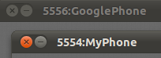

跟 snapshot 一樣，不知道為什麼官方文件只提到有 Console 這個東西，但對 Console 的內容則幾乎沒有什麼著墨… 其實很多控制都得透過 Console 來做才行，例如控制多個 snapshots、模擬接到電話或 SMS 簡訊等…
|
|
同時啟動多個 AVD 時，可以從 emulator 視窗抬頭判別不同 AVD 的 console 埠號。

|
透過一般 telnet 工具可以連上 console：
$ telnet localhost 5554
Trying ::1...
Trying 127.0.0.1...
Connected to localhost.
Escape character is '^]'.
Android Console: type 'help' for a list of commands
OK
help
Android console command help:
help|h|? print a list of commands
event simulate hardware events
geo Geo-location commands
gsm GSM related commands
cdma CDMA related commands
kill kill the emulator instance
network manage network settings
power power related commands
quit|exit quit control session
redir manage port redirections
sms SMS related commands
avd control virtual device execution
window manage emulator window
qemu QEMU-specific commands
sensor manage emulator sensors
try 'help <command>' for command-specific help
OK
help gsm  allows you to change GSM-related settings, or to make a new inbound phone call
available sub-commands:
gsm list list current phone calls
gsm call create inbound phone call
gsm busy close waiting outbound call as busy
gsm hold change the state of an oubtound call to 'held'
gsm accept change the state of an outbound call to 'active'
gsm cancel disconnect an inbound or outbound phone call
gsm data modify data connection state
gsm voice modify voice connection state
gsm status display GSM status
gsm signal set sets the rssi and ber
OK
help gsm call
allows you to change GSM-related settings, or to make a new inbound phone call
available sub-commands:
gsm list list current phone calls
gsm call create inbound phone call
gsm busy close waiting outbound call as busy
gsm hold change the state of an oubtound call to 'held'
gsm accept change the state of an outbound call to 'active'
gsm cancel disconnect an inbound or outbound phone call
gsm data modify data connection state
gsm voice modify voice connection state
gsm status display GSM status
gsm signal set sets the rssi and ber
OK
help gsm call  'gsm call <phonenumber>' allows you to simulate a new inbound call
OK
quit
'gsm call <phonenumber>' allows you to simulate a new inbound call
OK
quit  $
$參考資料
-
Android Portal » How to get access to the Linux shell / emulator console in Android OS (2007-11-16) - console 跟 shell 顯然是兩種很不一樣的東西。
-
命令行关闭Android模拟器 - MindMac - 博客园 (2012-05-13)